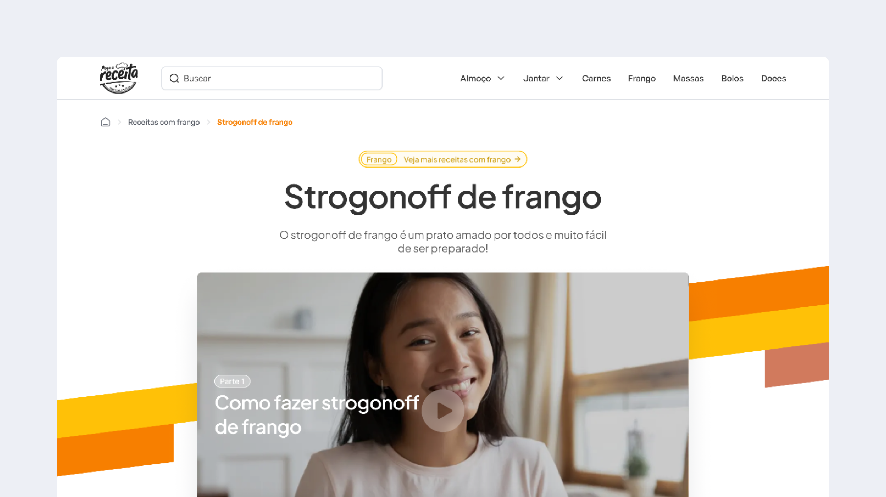
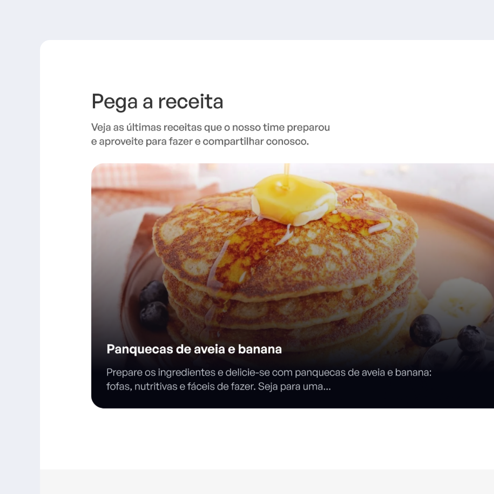
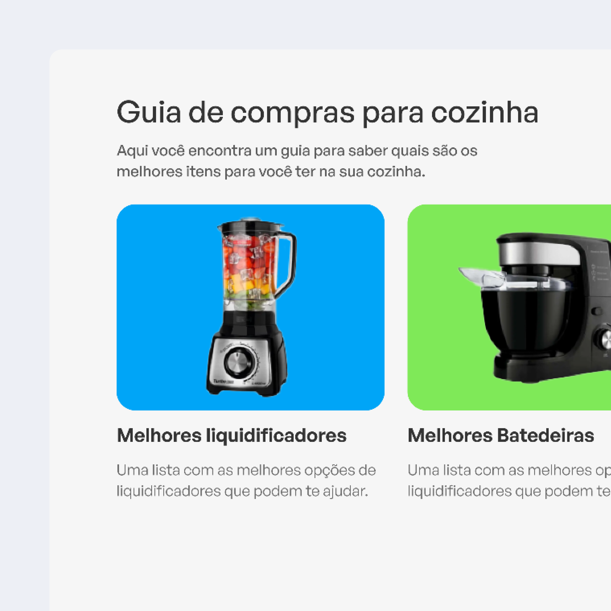
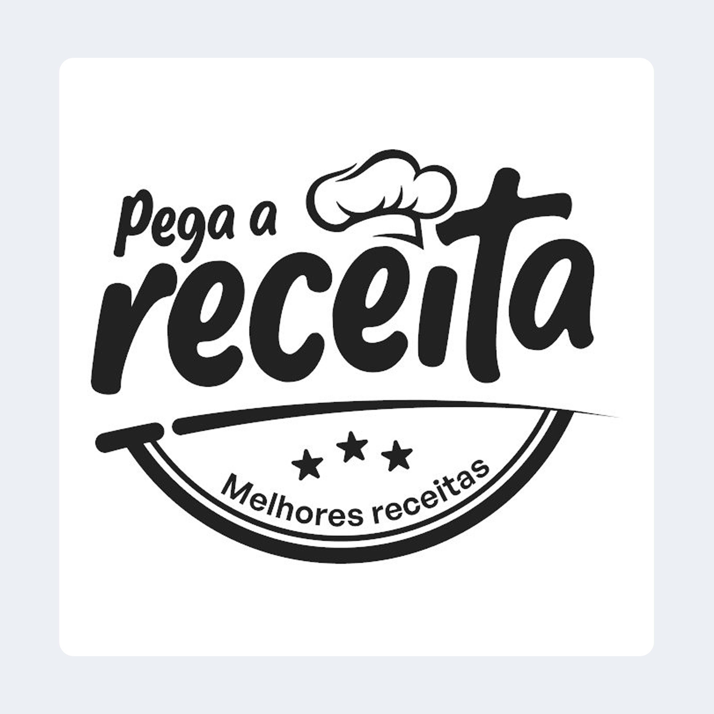
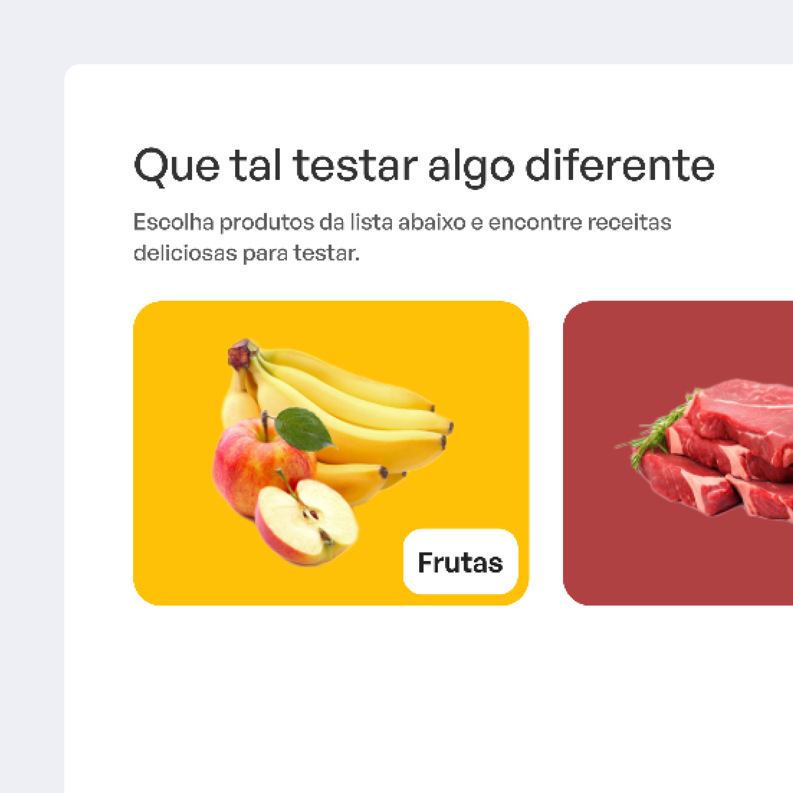

Pega a Receita

- Cliente
- Pega a Receita
- Ano
- 2025
- Tipo
- Site de receitas
- Role
- UX/UI Design
O cenário
O projeto surgiu da oportunidade de repensar a experiência de uma plataforma de receitas para torná-la mais intuitiva, acessível e orientada à descoberta. Em um contexto em que plataformas desse tipo dependem de clareza, navegação fluida e engajamento recorrente, o desafio era criar uma experiência capaz de equilibrar exploração de conteúdo, usabilidade e uma jornada agradável em múltiplos dispositivos.



O que o VulpiStudio precisava resolver
O desafio estava em estruturar uma experiência que facilitasse a descoberta de receitas, reduzisse fricções durante navegação e preparo, e tornasse o produto mais envolvente para estimular recorrência de uso. Além da interface, havia a oportunidade de pensar a plataforma como uma experiência mais completa, conectando conteúdo, interação e utilidade.


Hipótese de solução
A hipótese foi que uma experiência mais orientada à descoberta, com melhor hierarquia de informação, navegação simplificada e foco mobile-first, poderia tornar o uso mais intuitivo e aumentar engajamento. A proposta era combinar exploração de conteúdo e praticidade, transformando a plataforma em algo mais útil e agradável no dia a dia do usuário.

Como implementamos a solução
A solução foi construída a partir da reorganização da arquitetura da experiência, priorizando descoberta, leitura e execução das receitas. O trabalho focou em evoluir fluxos principais, melhorar escaneabilidade de conteúdo, reforçar consistência visual e criar uma experiência responsiva preparada para diferentes contextos de uso.

E esses foram os resultados
O projeto resultou em uma experiência pensada para maximizar descoberta, engajamento e facilidade de uso desde o lançamento do produto. A solução estabeleceu uma base escalável para a plataforma, com projeção de aumento de 38% na exploração de receitas por navegação e busca, 27% maior intenção de recorrência, além de uma experiência otimizada para mobile, principal contexto de uso do produto. Além dos indicadores de engajamento esperados, o projeto definiu uma estrutura sólida para crescimento do produto, contemplando evolução de conteúdo, retenção e futuras oportunidades de monetização.